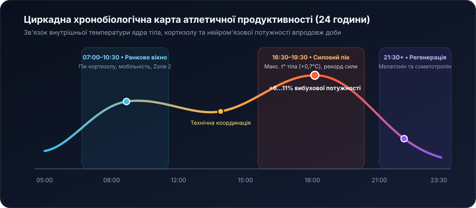
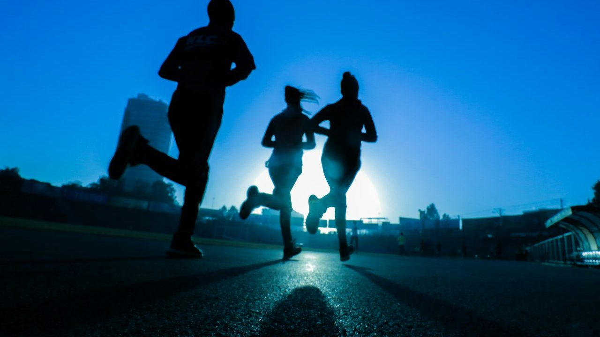
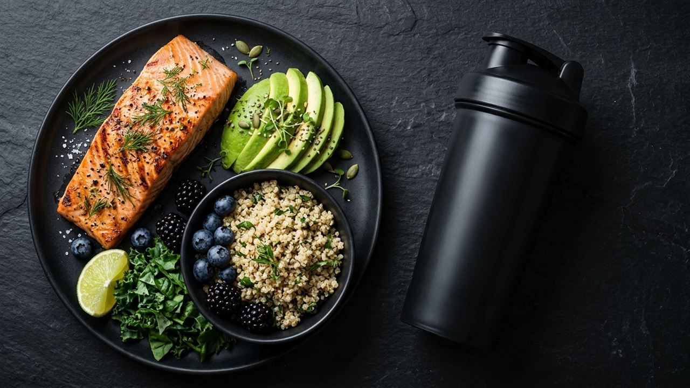
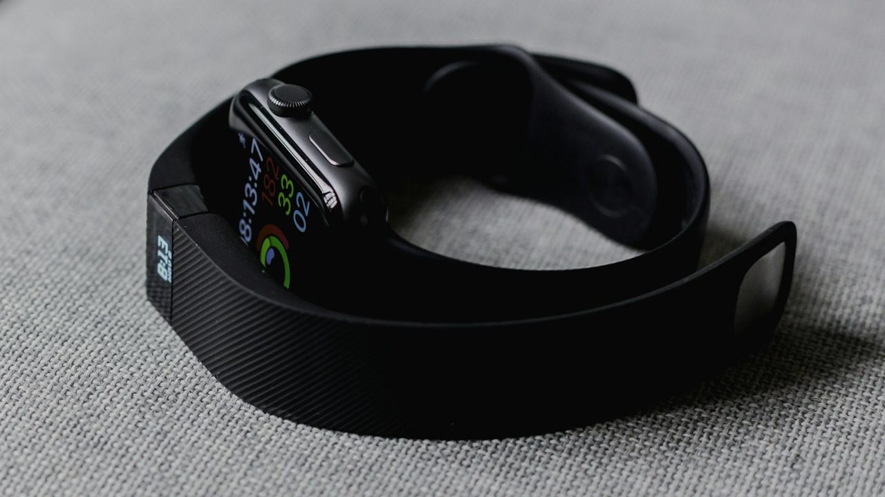

1. Сила починається в моторній корі: спортивна нейропластичність
У перші 5–6 тижнів системних занять робочі ваги зростають на 25–40% ще до візуального потовщення м’язових волокон. Цей механізм називається нейромоторною адаптацією: мозок синхронно рекрутує високопорогові рухові одиниці типу IIa/IIx, підвищує частоту нервової імпульсації та усуває зайвий супротив м’язів-антагоністів.

Контрольована ексцентрична фаза руху (плавне опускання штанги чи власної ваги за 2–3 секунди) формує насичений потік пропріоцептивних сигналів від сухожильних рецепторів Гольджі, закріплюючи бездоганну біомеханіку та захищаючи зв’язки від мікротравм.
2. Хронобіологія спорту: у яку годину тіло готове до рекорду
Супрахіазматичне ядро гіпоталамуса керує добовими ритмами кортизолу, тестостерону, в’язкості синовіальної рідини та внутрішньої температури ядра тіла. Підвищення температури тіла на 0,7 °C між ранком і 17:30 вечора прискорює провідність нервових волокон і додає до 6–11% вибухової потужності.

| Часовий інтервал | Фізіологічний фон | Оптимальний формат | Час розминки |
|---|---|---|---|
| 06:30 – 10:00 (Ранок) | Пік кортизолу, гідратовані міжхребцеві диски | Плавання 25 м, Zone 2, мобільність | 14–16 хв |
| 12:00 – 15:00 (День) | Висока координація та швидкість реакції | Бокс, калістеніка, силовий спліт | 10–12 хв |
| 16:30 – 19:30 (Вечірній пік) | Максимум температури тіла й еластичності зв’язок | Важка атлетика, рекорди 1ПМ, HIIT | 8–10 хв |
| 20:30 – 22:30 (Пізній вечір) | Активація парасимпатичної системи | Міофасціальний реліз, розтяжка, ІЧ-сауна | 5 хв |
3. Терморегуляція, клітинна гідратація та електролітний баланс
Втрата лише 2% маси тіла з потом знижує аеробну витривалість на 10–15%, згущує плазму крові та змушує серце битися на 8–12 ударів на хвилину частіше за тієї самої швидкості бігу чи плавання. Проте пити саму лише дистильовану або низькомінералізовану воду під час тривалих сесій недостатньо: разом із потом організм втрачає іони натрію, калію та магнію, які відповідають за проведення електричного потенціалу дії по мембрані м’язової клітини.

• За 90 хв до сесії: 400–500 мл чистої води кімнатної температури.
• Під час активного тренування (> 50 хв): по 150–200 мл кожні 15–20 хвилин (для HIIT, боксу чи гібриду — з додаванням 400–600 мг натрію на літр).
• Після завершення: поповнення 125% втраченої рідини впродовж наступних 2 годин.
4. Нутриціологічна матриця: паливо для пластики тканин
Раціональне спортивне харчування базується на гнучкому балансі білків, жирів і вуглеводів (КБЖВ) із прив’язкою складних вуглеводів до важких силових або інтервальних днів.

| Спортивна мета | Білки (г/кг) | Жири (г/кг) | Вуглеводи (г/кг) | Енергетичний баланс |
|---|---|---|---|---|
| Рельєф зі збереженням м’язів | 2,0 – 2,2 г/кг | 0,8 – 1,0 г/кг | 2,2 – 3,0 г/кг | М’який дефіцит −14% |
| Рекомпозиція та функціональний тонус | 1,8 – 2,0 г/кг | 0,9 – 1,1 г/кг | 3,2 – 4,0 г/кг | Норма підтримки (0%) |
| Набір м’язової маси та ріст сили | 1,7 – 2,0 г/кг | 1,0 – 1,2 г/кг | 4,5 – 5,8 г/кг | Профіцит +10% |
| Марафонська та аква-витривалість | 1,5 – 1,7 г/кг | 0,9 – 1,1 г/кг | 6,0 – 8,0 г/кг | Вуглеводна компенсація |
5. Цифрова біометрія сну та варіабельність серцевого ритму (HRV)
Найнадійнішим маркером готовності центральної нервової системи до навантажень є варіабельність серцевого ритму (HRV) — мілісекундна різниця між сусідніми скороченнями серця під час глибокого сну.

- Стабільний або підвищений HRV: зелене світло для важкої штанги, ривка, боксу чи інтенсивного HIIT.
- Зниження HRV на 20% і більше: сигнал замінити важку базу на плавання у помірному темпі, кінезіотерапію або регенерацію у купелях.
- Золоте правило відновлення: прохолодна спальня (18–19 °C), темрява та відсутність яскравих екранів за годину до сну дають більший приріст форми, ніж будь-які спортивні добавки.